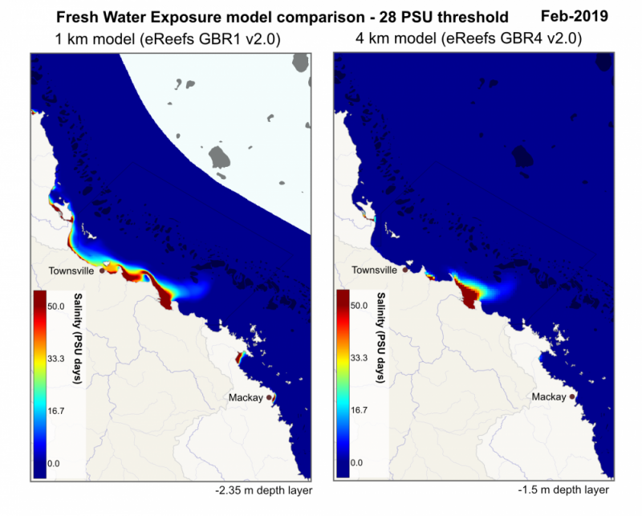

Fresh water exposure at 2.35m (GBR1)
| < | ---- | > |
| Jan | Feb | Mar |
| Apr | May | Jun |
| Jul | Aug | Sep |
| Oct | Nov | Dec |
This page shows as estimate of exposure to fresh water on the Great Barrier Reef based on the 1km eReefs Hydrodynamic model.
Coral Exposure to Fresh Water
When corals are stressed by changes in conditions (such as salinity or temperature), they can expel the symbiotic algae living in their tissues (zooxanthellae), causing them to turn completely white (bleach). Prolonged or frequent bleaching events can result in coral death. This product aims to provide an estimate of exposure to fresh water over the aggregation period (eg: a calendar month). Predicting the level of coral bleaching from freshwater exposure is difficult due to uncertainties in the hydrodynamic modelling and the relatively poor understanding of freshwater exposure. This product calculates fresh water exposure as the number of hours over the aggregation period when salinity is below an environmentally significant threshold (26 and 28 PSU are used in the above images, which represent significantly more fresh than sea water). Based on the few observations available, areas in these maps with an exposure of greater than 50 PSU days (such as occurred around North Queensland Floods in 2019) are likely to have experienced coral mortality. In years where there has been minimal flooding the fresh water exposure map is largely blank.
Similar products
- Animation of salinity at multiple depths 1 km model (scaled to show detail below 32 PSU) (1 km eReefs model)
- Animation of the full extent of the flood plume 1 km model (salinity scaled to show any fresh water)
- Animation of the full extent of the flood plume 4 km model (salinity scaled to show any fresh water)
Background
The salinity of normal ocean water is approximately 35 PSU. As freshwater is mixed with the sea water the salinity drops, with pure water having a PSU of zero. Coral reefs are sensitive to freshwater as exposure can lead to bleaching and death. The relationship between freshwater exposure and coral bleaching and mortality is poorly understood. However flooding from Fitzroy river in 2011 cause significant shallow water coral mortality on the nearby Keppel Islands (Berkelmans et al. 2012).
Average salinity
The third panel in the map shows the average salinity for the month. This is quite similar to the freshwater exposure except that is includes contributions from areas where there was very little freshwater.
Freshwater exposure calculations
The freshwater exposure maps show the level of exposure to salinity levels below a specified threshold over a month. In the maps above the freshwater exposure was calculated for two threshold levels: 26 and 28 PSU. These were chosen as different species have different tolerances to freshwater exposure, and the most appropriate level is not currently known.
The freshwater exposure is calculated from the sum of the daily average salinity below the exposure threshold. Salinity levels above the threshold don't contribute at all to the exposure. Salinity levels below the threshold contribute in proportion to the amount below the threshold. As a result with a threshold of 28 PSU and an exposure to 22 PSU for 3 days the freshwater exposure would be (28-22)*3 = 18 PSU days. The same exposure at 25 PSU would take 6 days (28-25)*6 = 18 PSU days. This method of calculating exposure is conceptually very similar to temperature exposure measured in Degree Heating Weeks, where the higher the temperature is above the typical maximum summer temperature the faster the heat stress occurs. For freshwater exposure the stress occurs when the salinity drops below the threshold value. The lower the salinity the faster the exposure accumulates. More research is needed to determine if this is the best method for estimating stress from freshwater.
For comparison the freshwater exposure calculations were applied to the observations taken during the Fitzroy flooding event in 2011 that caused significant coral mortality on reef flats corals in the Keppel Islands (Berkelmans et al. 2012). This shows that exposure to greater than 50 PSU days can result in significant mortality, particularly in sensitive coral species.
| Island | Freshwater exposure (PSU days, 28 PSU threshold) | Reef flat mortality (%) |
|---|---|---|
| Great Keppel | 130 | 100 |
| Halfway | 110 | 100 |
| North Keppel | 50 | 40 |
| Miall | 40 | 0 |
How accurate is the modelled freshwater exposure?
The results on this page are generated from a model and not based on direct measurements of the salinity. It is difficult to reliably determine the level of error without direct measures of salinity during the event, however there are a few clues that give us some estimate of the error and confidence in the results. ?@fig-fresh-water-comparison shows a comparison between the freshwater exposure calculated from the 1 km and 4 km eReefs hydrodynamic models (v2.0). This shows there is a significant difference between these models. For a threshold of 28 PSU at Magnetic Island the 1 km model shows freshwater exposure of 35 PSU days, where as the 4 km model shows 0 PSU days.

by AIMS
?@fig-fresh-water-comparison shows a comparison between the freshwater exposure calculated for February 2019 from the 4 km and 1 km eReefs hydrodynamic model (v2.0) with a threshold of 28 PSU. The 4 km model predicts a smaller freshwater plume.
Observations taken along the eastern side of Magnetic Island taken on the 20th February 2019 showed no evidence of freshwater bleaching, although some corals were pale due to low light conditions. Corals on the rocks near AIMS (near the Haughton river) showed freshwater mortality. These two points of reference can be used to gauge whether the 1 km or 4 km results are more accurate.
| Location | 1 km model (28 PSU threshold) | 4 km model (28 PSU threshold) | Observed freshwater mortality | ||
|---|---|---|---|---|---|
| Freshwater exposure (PSU days) | Predicted morality (Berkelmans, 2012) | 4 km model freshwater exposure (28 PSU threshold) | Predicted morality (Berkelmans, 2012) | ||
| Magnetic Island | 35 | None | 0 | None | None |
| Cape Ferguson | 75 | High | 15 | None | High |
Applying the previously estimated freshwater exposure 50 PSU days the 1 km model predicts there would be coral mortality at Cape Ferguson, which was the case, where as the 4 km model predicts none. At Magnetic Island both models predict no freshwater mortality and none was observed.
There is currently little evidence to assess the accuracy of freshwater exposure maps, however the available evidence indicates that the 1 km model are a better match to observations.
References
Berkelmans, R., Jones, A.M. & Schaffelke, B. (2012) Salinity thresholds of Acropora spp. on the Great Barrier Reef. 31: 1103. Coral Reefs. https://doi.org/10.1007/s00338-012-0930-z
Source data
The videos/images on this page are based on the 1km eReefs Hydrodynamic model (v2.0) of the Great Barrier Reef. The raw data is available from NCI THREDDS server (hourly) and the aggregate data from the AIMS eAtlas THREDDS server (daily, monthly, yearly, all). These map layers are also available for inspection as an interactive map.
Recent data
The results are updated in near-real-time, however sometimes they can be behind real time up to 2 weeks. This happens due to delays in the model runs being held up for technical reasons or delays in source data that drive the model. This visualisation portal can sometimes also delay the products by up to 1 day. To check the latest available model data look at the date on the NCI THREDDS server. If the model data is more up to date than this portal let us know.
Erratum
From 28 Dec 2014 - 29 Dec 2014 and from 1 Dec - 10 Dec 2021, the forcing data for the GBR1 eReefs model was incorrect due to a process failure while extracting the relevant ACCESS data. This resulted in static tides and winds during this period, leading to incorrect model outputs during Dec 2014 and 2021, with some carry over error into Jan 2022. This forcing error led to a decrease in water mixing resulting in the temperature building up several degrees hotter than it should and to the flood plumes from the Fitzroy and Burnett moving in the wrong direction.
CSIRO are correcting this problem by re-running the model from Dec 2021 for several months to replace this section of the data. This warning will be updated when this change has been made.